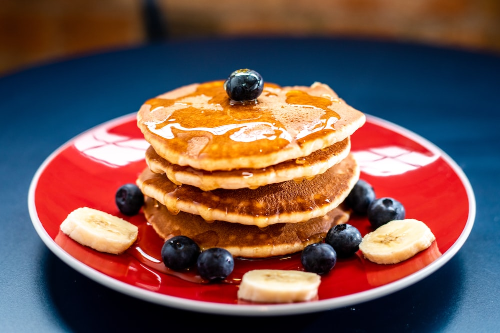

Pancake

Ingredients
- flour
- salt
- oil
- white sugar
- milk
- egg
Instructions
- In a large bowl, sift together the flour,
baking powder, salt and sugar. Make a well in the center and pour in
the milk, egg and melted butter; mix until smooth.
- Heat a lightly oiled griddle or frying pan over
medium-high heat. Pour or scoop the batter
onto the griddle, using approximately 1/4 cup for each
pancake.
Brown on both sides and serve hot.